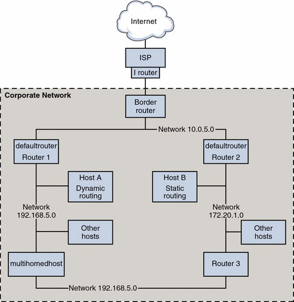

Previous
Previous
Packet Forwarding and Routing on IPv4 Networks
This section contains procedures and examples that show how to configure forwarding and routing for routers and hosts on IPv4 networks.
Packet forwarding is the basic method for sharing information across systems on a network. Packets are transferred between a source interface and a destination interface, usually on two different systems. When you issue a command or send a message to a nonlocal interface, your system forwards those packets onto the local network. The interface with the destination IP address that is specified in the packet headers then retrieves the packets from the local network. If the destination address is not on the local network, the packets are then forwarded to the next adjacent network, or hop. By default, packet forwarding is automatically configured when you install the Solaris OS.
Routing is the process by which systems decide where to send a packet. Routing protocols on a system "discover" the other systems on the local network. When the source system and the destination system are on the same local network, the path that packets travel between them is called a direct route. If a packet must travel at least one hop beyond its source system, the path between the source system and destination system is called an indirect route. The routing protocols learn the path to a destination interface and retain data about known routes in the system's routing table.
Routers are specially configured systems with multiple physical interfaces that connect the router to more than one local network. Therefore, the router can forward packets beyond the home LAN, regardless of whether the router runs a routing protocol. For more information about how routers forward packets, refer to Planning for Routers on Your Network.
Routing protocols handle routing activity on a system and, by exchanging routing information with other hosts, maintain known routes to remote networks. Both routers and hosts can run routing protocols. The routing protocols on the host communicate with routing daemons on other routers and hosts. These protocols assist the host in determining where to forward packets. When network interfaces are enabled, the system automatically communicates with the routing daemons. These daemons monitor routers on the network and advertise the routers' addresses to the hosts on the local network. Some routing protocols, though not all, also maintain statistics that you can use to measure routing performance. Unlike packet forwarding, you must explicitly configure routing on a Solaris system.
This section contains tasks for administering packet forwarding and routing on IPv4 routers and hosts. For information about routing on an IPv6-enabled network, refer to Configuring an IPv6 Router.
Routing Protocols Supported by the Solaris OS
Routing protocols are classified as interior gateway protocols (IGPs), exterior gateway protocols (EGPs), or a combination of both. Interior gateway protocols exchange routing information between routers on networks under common administrative control. In the network topology shown in Figure 5-2, the routers run an IGP for exchanging routing information. Exterior gateway protocols enable the router that connects the local internetwork to an external network to exchange information with another router on the external network. For example, the router that connects a corporate network to an ISP runs an EGP to exchange routing information with its router counterpart at the ISP. Border Gateway Protocol (BGP) is a popular EGP that is used for carrying routing information between different organizations and IGPs.
The following table provides information about the Solaris routing protocols and the location of each protocol's associated documentation.
Table 5-1 Solaris Routing Protocols
Protocol | Associated Daemon | Description | For Instructions |
|---|---|---|---|
Routing Information Protocol (RIP) | in.routed | IGP that routes IPv4 packets and maintains a routing table | |
Internet Control Message Protocol (ICMP) Router Discovery | in.routed | Used by hosts to discover the presence of a router on the network | How to Enable Static Routing on a Single-Interface Host and How to Enable Dynamic Routing on a Single-Interface Host |
Routing Information Protocol, next generation (RIPng) Protocol | in.ripngd | IGP that routes IPv6 packets and maintains a routing table | |
Neighbor Discovery (ND) Protocol | in.ndpd | Advertises the presence of an IPv6 router and discovers the presence of IPv6 hosts on a network |
IPv4 Autonomous System Topology
Sites with multiple routers and networks typically administer their network topology as a single routing domain, or autonomous system (AS) . The following figure shows a typical network topology that would be considered a small AS. This topology is referenced in the examples throughout this section.
Figure 5-2 Autonomous System With Multiple IPv4 Routers
The figure shows an AS that is divided into three local networks, 10.0.5.0, 172.20.1.0, and 192.168.5. Four routers share packet-forwarding and routing responsibilities. The AS includes the following types of systems:
Border routers connect an AS to an external network, such as the Internet. Border routers interconnect with networks external to the IGP running on the local AS. A border router can run an EGP, such as Border Gateway Protocol (BGP), to exchange information with external routers, for example, the routers at the ISP. In Figure 5-2, the border router's interfaces connect to internal network 10.0.5.0 and to a high-speed router to a service provider.
For information on configuring a border router, refer to the Open Source Quagga documentation for BGP.
If you plan to use BGP to connect your AS to the Internet, you should obtain an autonomous system number (ASN) from the Internet Registry for your locale. Regional registries, such as the American Registry for Internet Numbers (ARIN), offer guidelines on how to obtain an ASN. For example, the ARIN Number Resource Policy Manual contains instructions for getting an ASN for autonomous systems in the United States and Canada. Alternatively, your ISP might be able to obtain an ASN for you.
Default routers maintain routing information about all the systems on the local network. These routers typically run IGPs such as RIP. In Figure 5-2, Router 1s interfaces are connected to internal network 10.0.5.0 and internal network 192.168.5. Router 1 also serves as the default router for 192.168.5. Router 1 maintains routing information for all systems on 192.168.5 and routes to other routers, such as the border router. Router 2s interfaces connect to internal network 10.0.5.0 and internal network 172.20.1.
For an example of configuring a default router, refer to Example 5-4.
Packet-forwarding routers forward packets but do not run routing protocols. This type of router receives packets from one of its interfaces that is connected to a single network. These packets are then forwarded through another interface on the router to another local network. In Figure 5-2, Router 3 is a packet-forwarding router with connections to networks 172.20.1 and 192.168.5.
Multihomed hosts have two or more interfaces that are connected to the same network segment. A multihomed host can forward packets, which is the default for all systems that run the Solaris OS. Figure 5-2 shows a multihomed host with both interfaces connected to network 192.168.5. For an example of configuring a multihomed host, refer to Example 5-6.
Single interface hosts rely on the local routers, not only for packet forwarding but also for receiving valuable configuration information. Figure 5-2 includes Host A on the 192.168.5 network, which implements dynamic routing, and Host B on the 172.20.1 network, which implements static routing. To configure a host to run dynamic routing, refer to How to Enable Dynamic Routing on a Single-Interface Host. To configure a host to run static routing, refer to How to Enable Static Routing on a Single-Interface Host.
Configuring an IPv4 Router
This section contains a procedure and example for configuring an IPv4 router. To configure an IPv6-enabled router, refer to How to Configure an IPv6-Enabled Router.
Because a router provides the interface between two or more networks, you must assign a unique name and IP address to each of the router's physical network interfaces. Thus, each router has a host name and an IP address that are associated with its primary network interface, in addition to a minimum of one more unique name and IP address for each additional network interface.
You can also use the following procedure to configure a system with only one physical interface (by default, a host) to be a router. You might configure a single interface system as a router if the system serves as one endpoint on a PPP link, as explained in "Planning a Dial-up PPP Link" in System Administration Guide: Network Services.
Note - You can configure all interfaces of a router during Solaris system installation. For instructions, see Solaris Express Installation Guide: Basic Installations.
 How to Configure an IPv4 Router
How to Configure an IPv4 Router
The following instructions assume that you are configuring interfaces for the router after installation.
Before You Begin
After the router is physically installed on the network, configure the router to operate in local files mode, as described in How to Configure a Host for Local Files Mode. This configuration ensures that routers boot if the network configuration server is down.
On the system to be configured as a router, assume the Primary Administrator role or become superuser.
The Primary Administrator role includes the Primary Administrator profile. To create the role and assign the role to a user, see Chapter 2, "Working With the Solaris Management Console (Tasks)," in System Administration Guide: Basic Administration.
Use the dladm show-link command to determine which interfaces are physically installed on the router.
# dladm show-link
The following example output from dladm show-link indicates that a qfe NIC with four interfaces and two bge interfaces are physically available on the system.
qfe0 type: legacy mtu: 1500 device: qfe0 qfe1 type: legacy mtu: 1500 device: qfe1 qfe2 type: legacy mtu: 1500 device: qfe0 qfe3 type: legacy mtu: 1500 device: qfe1 bge0 type: non-vlan mtu: 1500 device: bge0 bge1 type: non-vlan mtu: 1500 device: bge1
Review which interfaces on the router were configured and plumbed during installation.
# ifconfig -a
The following example output from ifconfig -a shows that the interface qfe0 was configured during installation. This interface is on the 172.16.0.0 network. The remaining interfaces on the qfe NIC, qfe1 - qfe3, and the bge interfaces have not been configured.
lo0: flags=1000849 <UP,LOOPBACK,RUNNING,MULTICAST,IPv4> mtu 8232 index 1 inet 127.0.0.1 netmask ff000000 qfe0: flags=1000843 <UP,BROADCAST,RUNNING,MULTICAST,IPv4> mtu 1500 index 2 inet 172.16.26.232 netmask ffff0000 broadcast 172.16.26.255 ether 0:3:ba:11:b1:15Configure and plumb another interface.
# ifconfig interface plumb up
For example, for qfe1, you would type:
# ifconfig qfe1 plumb up
Note - Interfaces that are explicitly configured with the ifconfig command do not persist across reboots.
Assign an IPv4 address and a netmask to the interface.
 Caution - You can configure an IPv4 routers to receive its IP address
through DHCP, but this is recommended only for very experienced DHCP system
administrators.
Caution - You can configure an IPv4 routers to receive its IP address
through DHCP, but this is recommended only for very experienced DHCP system
administrators.# ifconfig interface IPv4-address netmask+netmask
For example, to assign the IP address 192.168.84.3 to qfe1, do either of the following:
Using traditional IPv4 notation, type the following:
# ifconfig qfe1 192.168.84.3 netmask + 255.255.255.0
Using CIDR notation, type the following:
# ifconfig qfe1 192.168.84.3/24
The prefix /24 automatically assigns the 255.255.255.0 netmask to qfe1. For a table of CIDR prefixes and their dotted-decimal netmask equivalents, refer to Figure 2-2.
(Optional) To ensure that the interface configuration persists across reboots, create an /etc/hostname.interface file for each additional physical interface .
For example, you would create the /etc/hostname.qfe1 and /etc/hostname.qfe2 files. Then you would type the host name timbuktu in /etc/hostname.qfe1 file and host name timbuktu-201 in /etc/hostname.qfe1 . For more information about configuring single interfaces, refer to How to Configure a Physical Interface After System Installation.
Be sure to do a configuration reboot after creating this file:
# reboot -- -r
Add the host name and IP address of each interface to the /etc/inet/hosts file.
For example:
172.16.26.232 deadsea #interface for network 172.16.0.0 192.168.200.20 timbuktu #interface for network 192.168.200 192.168.201.20 timbuktu-201 #interface for network 192.168.201 192.168.200.9 gobi 192.168.200.10 mojave 192.168.200.110 saltlake 192.168.200.12 chilean
The interfaces timbuktu and timbuktu-201 are on the same system. Notice that the network address for timbuktu-201 is different from the network interface for timbuktu. The difference exists because the physical network media for network 192.168.201 is connected to the timbuktu-201 network interface while the media for network 192.168.200 is connected to the timbuktu interface.
If the router is connected to any subnetted network, add the network number and the netmask to the /etc/inet/netmasks file.
For traditional IPv4 address notation, such as 192.168.83.0, you would type:
192.168.83.0 255.255.255.0
For CIDR addresses, use the dotted-decimal version of the prefix in the entry in the /etc/inet/netmask file. Network prefixes and their dotted-decimal equivalents can be found in Figure 2-2. For example, you would use the following entry in /etc/netmasks to express the CIDR network prefix 192.168.3.0/22:
192.168.3.0 255.255.252.0
Enable IPv4 packet forwarding on the router.
Use either of the following commands to enable packet forwarding:
Use the routeadm command, as follows:
# routeadm -e ipv4-forwarding -u
Use the following service management facility (SMF) command:
# svcadm enable ipv4-forwarding
At this point, the router can forward packets beyond the local network. The router also supports static routing, a process where you can manually add routes to the routing table. If you plan to use static routing on this system, then router configuration is complete. However, you need to maintain routes in the system routing table. For information on adding routes, see Configuring Routes and the route(1M) man page.
(Optional) Start arouting protocol.
The routing daemon /usr/sbin/in.routed automatically updates the routing table, a process that is known as dynamic routing. Turn on the default IPv4 routing protocols in either of the following ways:
Use the routeadm command, as follows:
# routeadm -e ipv4-routing -u
Use the following SMF command to start a routing protocol such as RIP.
# svcadm enable route:default
The SMF FMRI associated with the in.routed daemon is svc:/network/routing/route.
For information about the routeadm command, see the routeadm(1M) man page.
Example 5-4 Configuring the Default Router for a Network
This example shows how to upgrade a system with more than one interface to become a default router. The goal is to make Router 2, which is shown in Figure 5-2, the default router for network 172.20.1.0. Router 2 contains two wired network connections, one connection to network 172.20.1.0 and one to network 10.0.5.0. The example assumes that the router operates in local files mode, as described in How to Configure a Host for Local Files Mode.
After becoming superuser or assuming an equivalent role, you would determine out the status of the system's interfaces.
# dladm show-link
ce0 type: legacy mtu: 1500 device: ce0
bge0 type: non-vlan mtu: 1500 device: bge0
bge1 type: non-vlan mtu: 1500 device: bge1
# ifconfig -a
lo0: flags=1000849 <UP,LOOPBACK,RUNNING,MULTICAST,IPv4> mtu 8232 index 1
inet 127.0.0.1 netmask ff000000
ce0: flags=1000843 <UP,BROADCAST,RUNNING,MULTICAST,IPv4> mtu 1500 index 2
inet 172.20.1.10 netmask ffff0000 broadcast 172.20.10.100
ether 8:0:20:c1:1b:c6
|
The output of dladm show-link indicates that three links are available on the system. Only the ce0 interface has been plumbed. You would begin default router configuration by physically connecting the bge0 interface to the 10.0.5.0 network. Then, you would plumb the interface and make it persist across reboots.
# ifconfig bge0 plumb up
# ifconfig bge0 10.0.5.10
# ifconfig -a
lo0: flags=1000849 <UP,LOOPBACK,RUNNING,MULTICAST,IPv4> mtu 8232 index 1
inet 127.0.0.1 netmask ff000000
ce0: flags=1000843 <UP,BROADCAST,RUNNING,MULTICAST,IPv4> mtu 1500 index 2
inet 172.20.1.10 netmask ffff0000 broadcast 172.255.255.255
ether 8:0:20:c1:1b:c6
bge0: flags=1000843 <UP,BROADCAST,RUNNING,MULTICAST,IPv4> mtu 1500 index 2
inet 10.0.5.10 netmask ff000000 broadcast 10.255.255.255
ether 8:0:20:e5:95:c4
# vi /etc/hostname.bge0
10.0.5.10
255.0.0.0
|
Reboot the system, using the reconfiguration boot command:
# reboot -- -r |
Continue by configuring the following network databases with information about the newly plumbed interface and the network to which it is connected:
# vi /etc/inet/hosts 127.0.0.1 localhost 172.20.1.10 router2 #interface for network 172.20.1 10.0.5.10 router2-out #interface for network 10.0.5 # vi /etc/inet/netmasks 172.20.1.0 255.255.0.0 10.0.5.0 255.0.0.0 |
Finally, use SMF to enable packet forwarding and then enable the in.routed routing daemon.
# svcadm enable ipv4-forwarding # svcadm enable route:default |
Now IPv4 packet forwarding and dynamic routing through RIP are enabled on Router 2. However, the default router configuration for network 172.20.1.0 is not yet complete. You would need to do the following:
Modify each host on 172.10.1.10 so that the host gets its routing information from the new default router. For more information, refer to How to Enable Static Routing on a Single-Interface Host.
Define a static route to the border router in the routing table of Router 2. For more details, refer to Routing Tables and Routing Types.